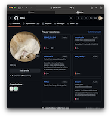
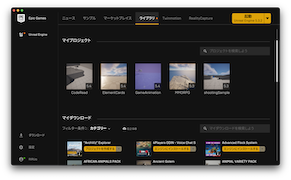

Useful link |
About MEMy name is RIRUa. I live in Japan. I am currently working as a full-stack engineer, and I am basically a server-side engineer, but I am also working on the client side and starting to code around infrastructure, and I am interested in DevOps. Recently, I have been mainly working on Kubernetes, Vapor, and gRPC integration, and I am thinking about starting to work on Kubernetes CronJobs soon. I have also been using Docker, but I am thinking about quitting it. At the same time, I am creating a game as a personal development project. It is an online card game. I would like to apply for Kodansha's Game Creators Lab and win 10 million yen to accelerate my game development. Oops, saying "accelerate" makes me sound like the stupid Prime Minister Kishida, which is embarrassing. This concludes my self-introduction.


|
Contact Me |